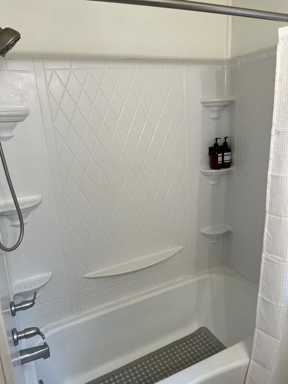
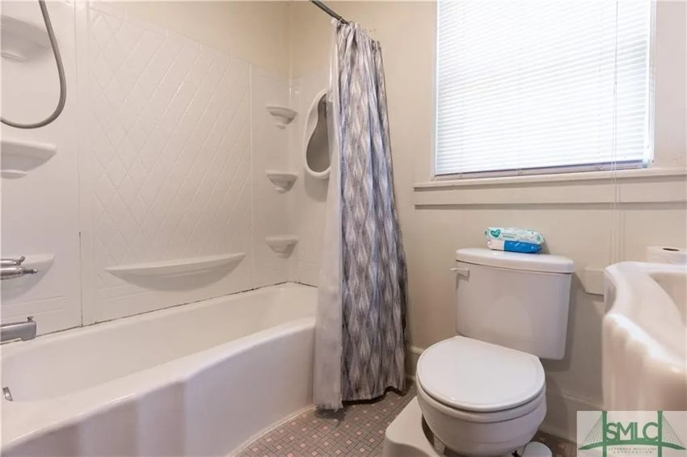
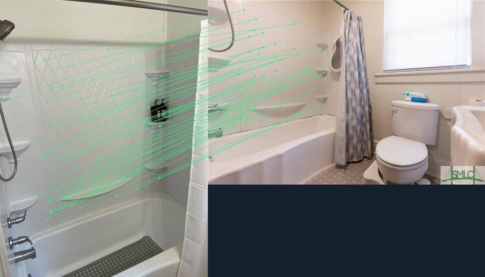
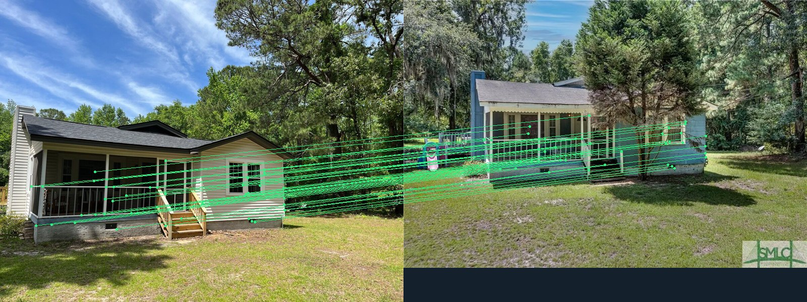

User-confirmed property match.
Visual compatibility score: 63.69; 172 feature inliers. This is not an identity probability.
View Airbnb listing · View Realtor listing · Back to map


Airbnb is on the left and Realtor is on the right. Green lines show features matched by SuperPoint + LightGlue.

